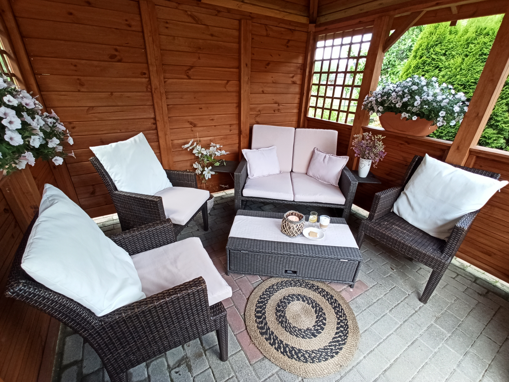
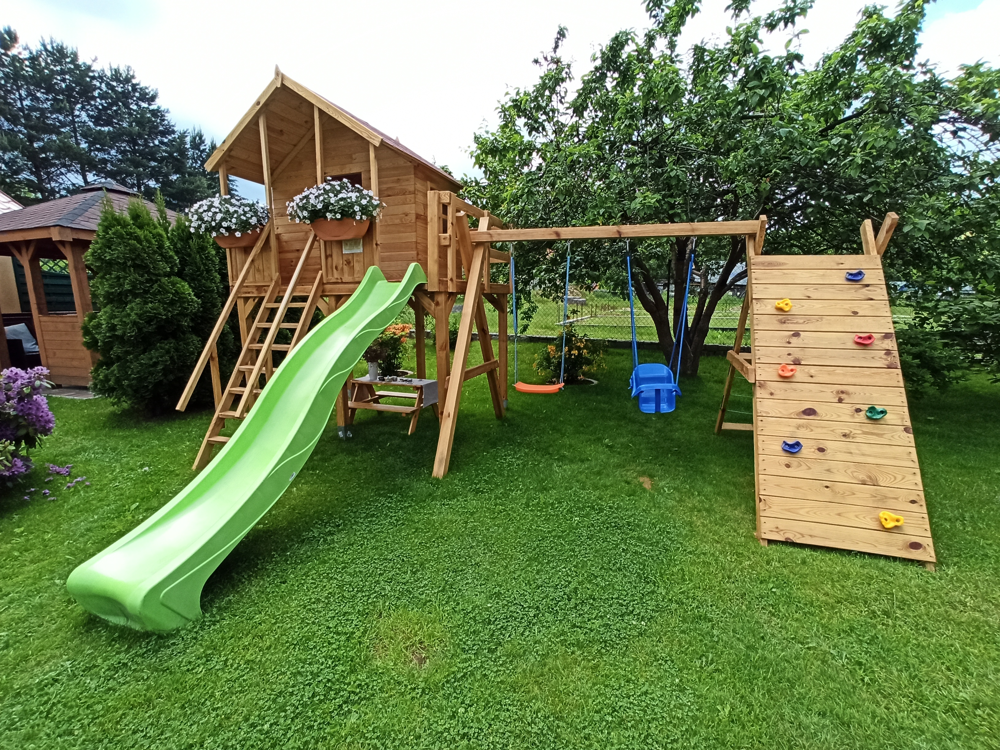

O Nas

Darmowy parking
Każdy pokój/apartamenty ma przypisane darmowe miejsce parkingowe

Potrzebny relaks?
Możesz odpocząć w pięknym ogródku gdzie znajdziesz miejsce dla siebie

Obiekt przyjazny dziecią
Na terenie obiektu znajduję się plac zabaw dla dzieci

Idelny na grilla
Możliwość zrobienia grila na terenie obiektu z widokiem na Śnieżkę